Unit 7 Family Guide: Plants & Environmental Interactions
Opti's Wonder Films · Lessons 18.01 to 21.02 · Weeks 18 to 21

How Do Plants Survive in Different Environments?
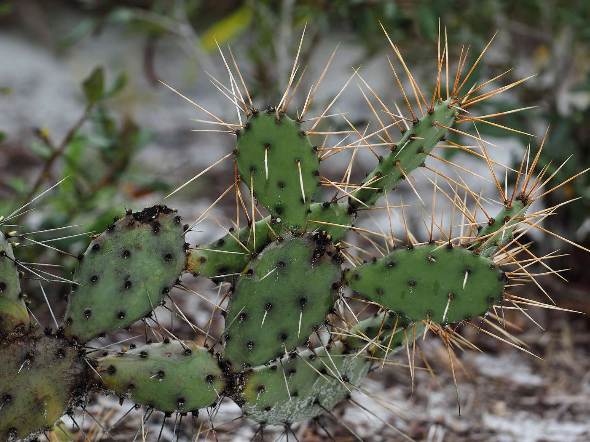
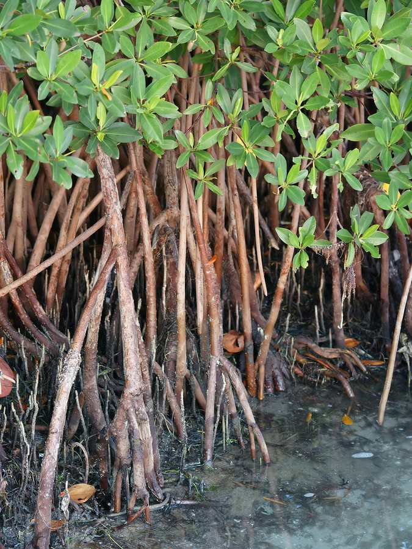
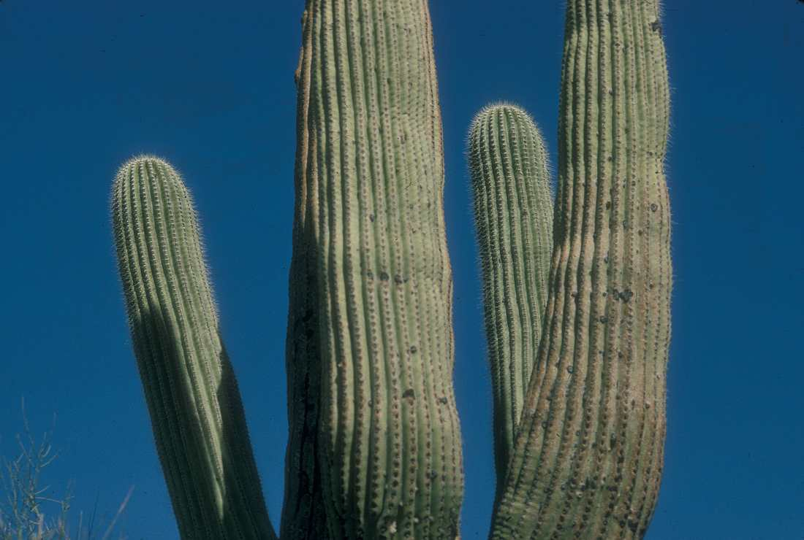
The film's big questionWhy do plants look so different from each other, and what does that tell us about where they live?
What your child learns
- A trait is a feature a plant has, like thick pads, spines or wide leaves. A trait that helps a plant survive where it lives is called an adaptation.
- A cactus stores water in its thick pads and has spines instead of big leaves, so it loses less water in a dry place.
- Rainforest leaves are wide with pointed tips, so rain runs right off them.
- A trait that helps a plant in one place may not help at all somewhere else.
Real specimens they studied
A prickly pear cactus from Florida scrub, a red mangrove at Fort Pierce, a rainforest leaf with a drip tip, big bluestem prairie grass, a saguaro in Arizona, and a water lily in Everglades National Park.
Words
- adaptation
- trait
- advantage
- environment
- reproduce
- root system
Ask at dinner
"Why does a cactus have spines instead of big, flat leaves?" (Listen for: big leaves lose water; thick pads and spines help it save water in a dry place.)
Try at home
Wet two paper towels. Lay one flat and roll the other one up tight. Check them in an hour. Which one is still wet? The rolled one is like a cactus saving water.
Investigation: Compare Plant Adaptations
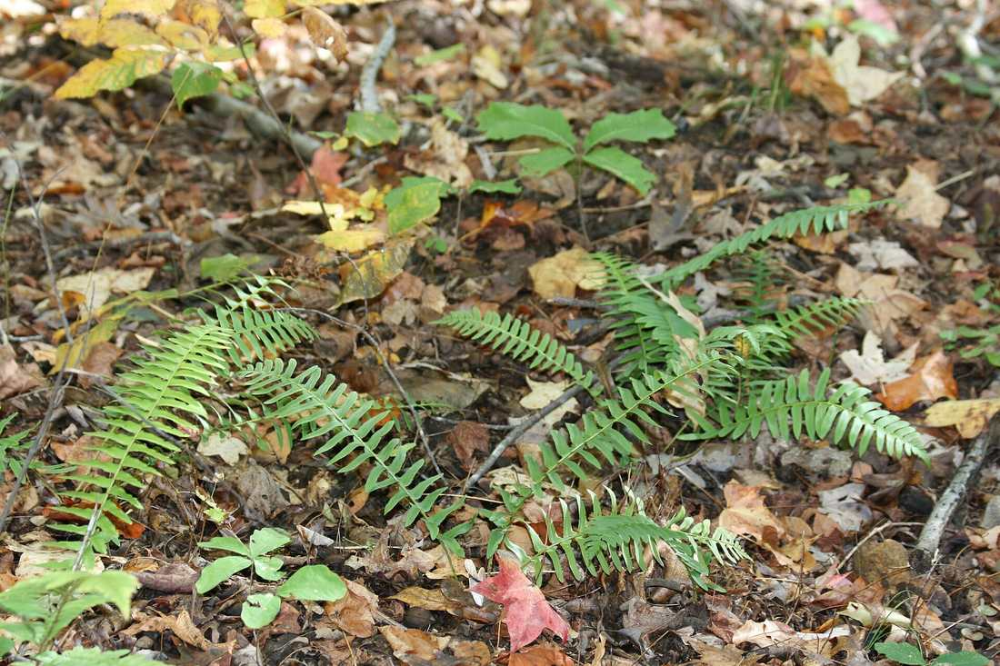
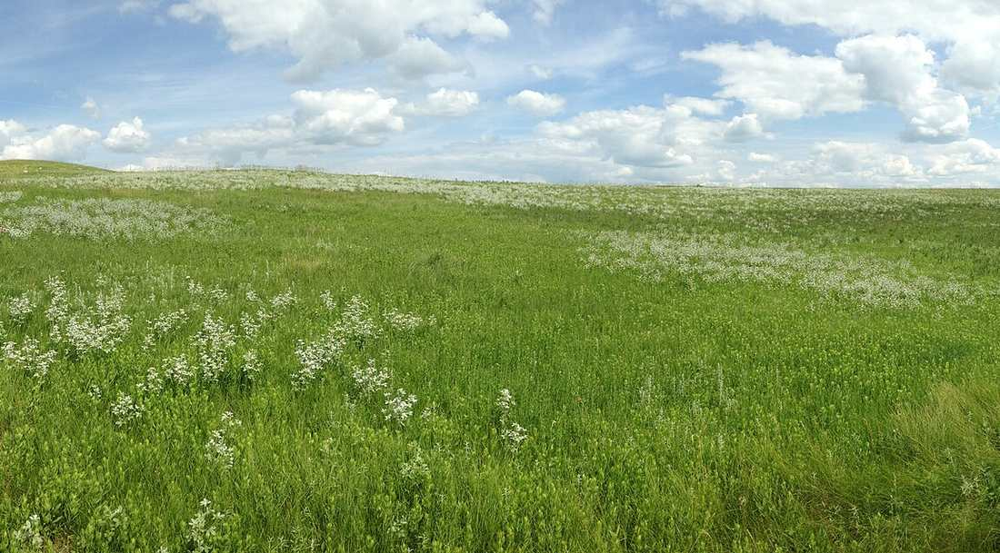
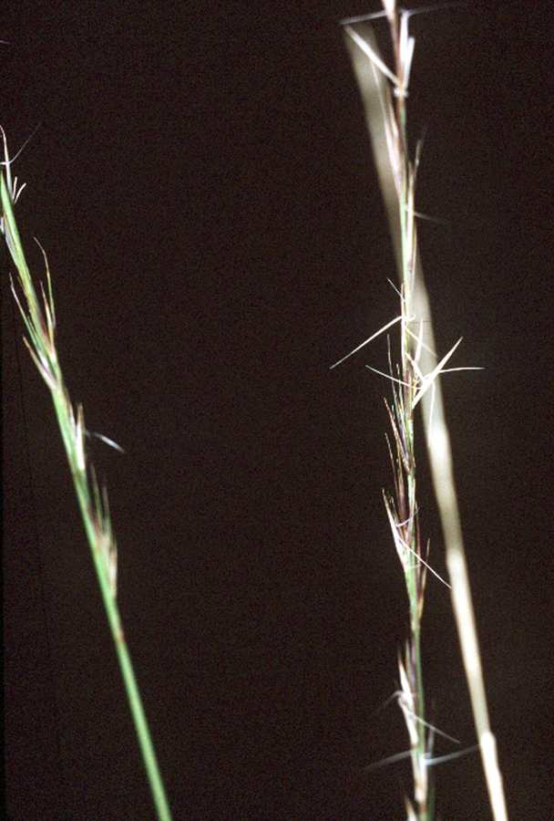
The film's big questionWhy do plants growing in two different places look so different from each other?
What your child learns
- Scientists compare plants side by side to find which trait gives an advantage in each place.
- Ferns on a shady forest floor have wide leaves that catch the little light that reaches the ground.
- Prairie grasses have thin leaves that bend in the wind and very deep roots, so they grow back after a dry spell or a fire.
- The same trait can help a plant in one place and hurt it in another.
Real specimens they studied
The underside of a Christmas fern, haircap moss, wild Boston fern from Florida, big bluestem prairie grass, and wiregrass from Florida's pine woods.
Words
- adaptation
- trait
- advantage
- environment
- survive
- variation
Ask at dinner
"Why would a big, wide leaf rip on a windy prairie?" (Listen for: wide leaves catch the wind; thin grass leaves bend and sway.)
Try at home
Cut one wide strip and one thin strip of paper. Hold them up on a windy day or in front of a fan. Which one flaps hard, and which one just sways?
How Do Plants Make Food?
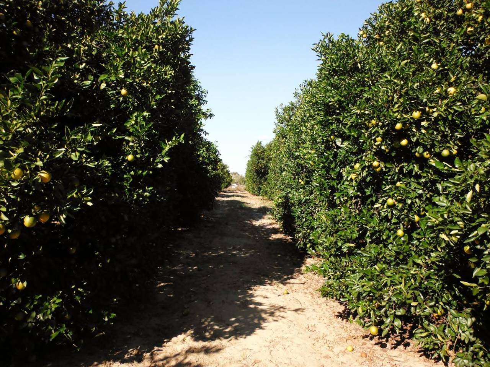
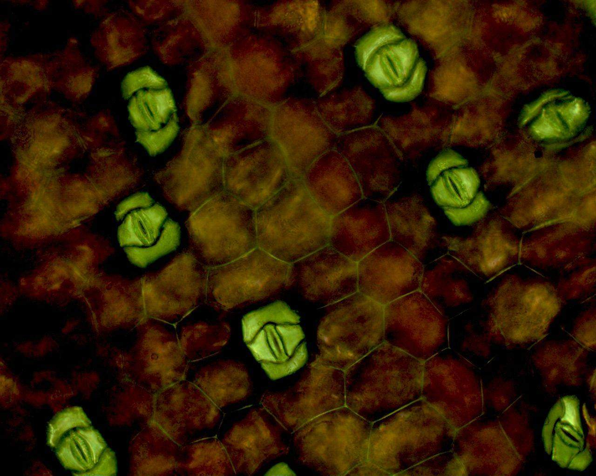

The film's big questionHow does a plant turn sunlight into food, and where does that food actually go?
What your child learns
- Plants make their own food. This is called photosynthesis.
- Leaves catch sunlight. Roots soak up water. Air goes in through tiny openings in the leaves.
- The plant makes sugar, which gives it energy to grow. Extra food is stored in places like fruits and roots.
- A plant kept in the dark can't make food, so it turns pale and stops growing well.
Real specimens they studied
A young bean plant with its roots, a real leaf under a microscope, a Florida live oak, potato sprouts grown in the dark, and turtle grass from the Florida Keys.
Words
- photosynthesis
- sunlight
- energy
- leaf
- sugar
- roots
Ask at dinner
"What three things does a plant need to make its own food?" (Listen for: sunlight, water and air.)
Try at home
With a grown-up's okay, set a plate upside down on a small patch of grass. Lift it after a week. What color is the grass? Take the plate away and watch the grass turn green again.
Investigation: Light & Plant Growth
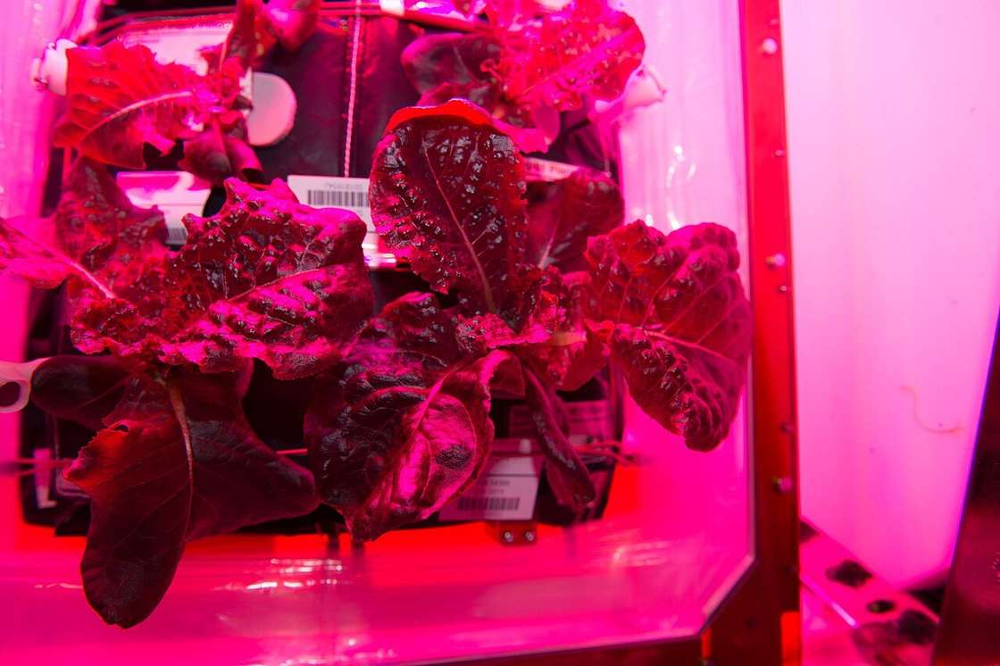

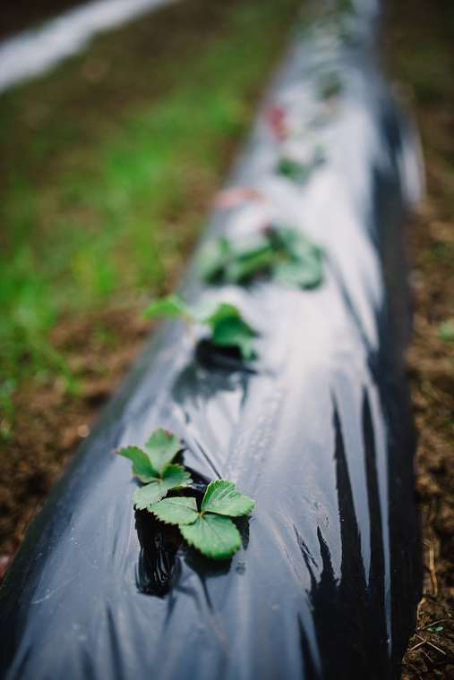
The film's big questionDoes it matter how much light a plant gets, and how would you prove it?
What your child learns
- In a fair test, scientists change only one thing. Two plants get the same soil and water, but different amounts of light.
- Your child read real growth data and built a bar graph.
- The pattern: more light, more growth. Plants grown in the dark come up pale and weak.
- Data is evidence. An explanation is stronger when the numbers back it up.
Real specimens they studied
Barley sprouts grown in the dark, red romaine lettuce grown on the International Space Station, Florida strawberries, weeds that sprouted under a metal lid, and netted chain fern.
Words
- data
- graph
- pattern
- evidence
- condition
- growth rate
Ask at dinner
"How could you prove that a plant needs light? What would you keep the same?" (Listen for: two of the same plant, the same soil and water, and only the light is different.)
Try at home
Plant two bean or grass seeds in cups with the same soil and water. Put one by a window and one in a closet. Measure both every two days for a week and compare.
How Do Plants Respond to Their Environment?
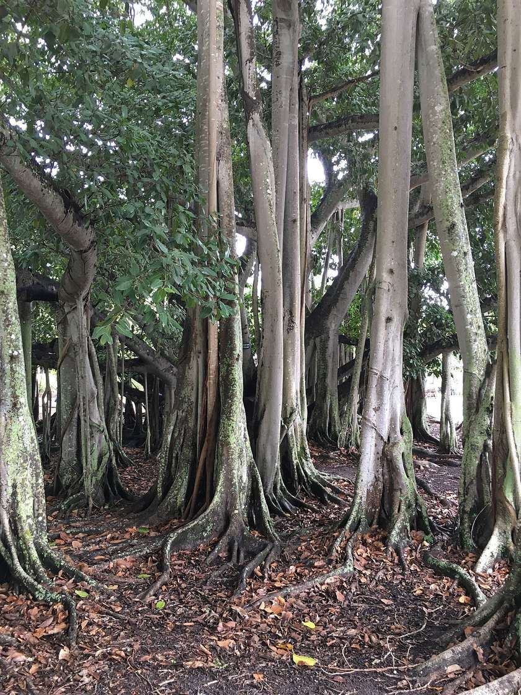
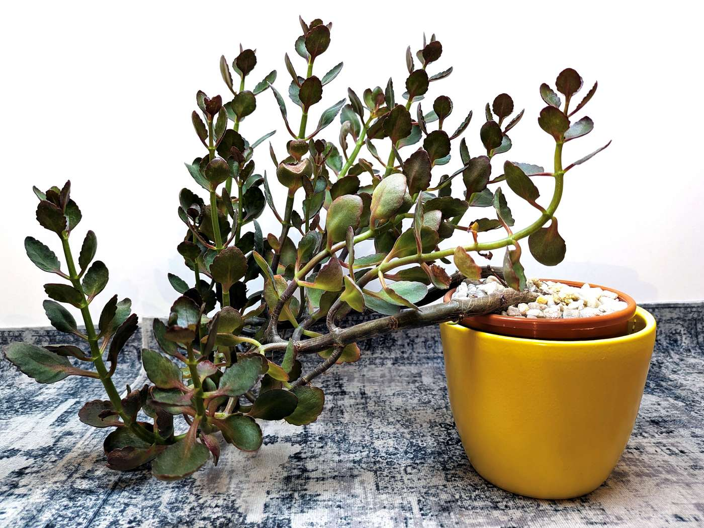
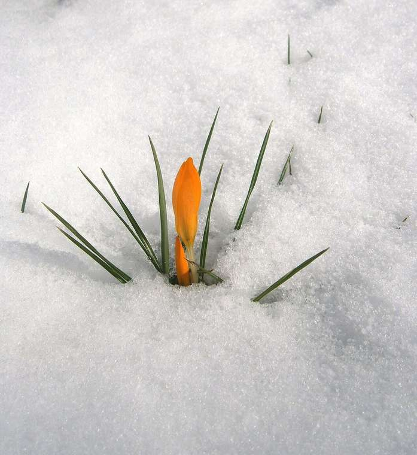
The film's big questionIf a plant can't move from place to place, how does it still survive when things change around it?
What your child learns
- A stimulus is a change around a plant. A response is what the plant does about it.
- Stems grow toward light (phototropism). Roots grow down with gravity (gravitropism) and toward water (hydrotropism).
- Plants respond to heat and cold too. Some trees drop their leaves, and some bulbs wait for warm days to bloom.
- These responses help a plant get what it needs, even though it can never walk anywhere.
Real specimens they studied
Thomas Edison's banyan tree in Fort Myers, a kalanchoe whose fallen stems curved back up, willow roots growing in a river, a fallen tree that grew back up, a Florida red maple, and crocuses.
Words
- response
- environment
- stimulus
- gravity
- phototropism
- survival
- gravitropism
- hydrotropism
Ask at dinner
"If you planted a seed upside down, which way would its root grow?" (Listen for: down, because roots respond to gravity; the stem turns up.)
Try at home
Lay a small potted houseplant on its side for two or three days (cover the soil with foil). Watch the stem tips turn back up. That's a response to gravity.
Investigation: Phototropism Experiment
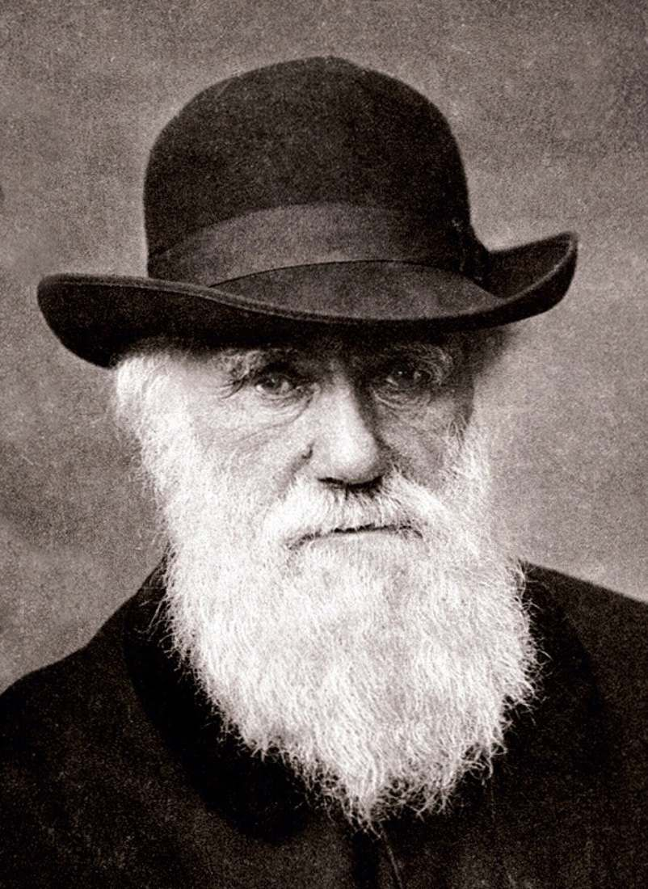

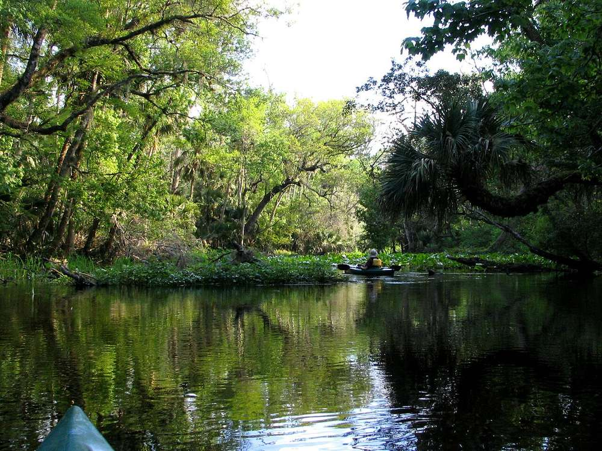
The film's big questionHow can we prove a plant is growing toward the light?
What your child learns
- Phototropism means growing toward light. Light is the stimulus, and the bending stem is the response.
- In 1880, Charles Darwin and his son put tiny caps on seedling tips. The capped seedlings didn't bend, so they figured out that the tip senses the light.
- Scientists find a growth pattern by observing the same plant day after day.
- Growing toward light helps a plant make more food.
Real specimens they studied
Tomato seedlings by a window, bean and grass seedlings, a fishhook barrel cactus, trees along Wekiwa Run in Florida, and English ivy.
Words
- phototropism
- stimulus
- response
- growth pattern
- observation
- evidence
Ask at dinner
"Why do houseplants lean toward the window?" (Listen for: they grow toward the light so they can make more food.)
Try at home
Put a plant by a window and draw it on Day 1. Draw it again on Day 4 and Day 7. Then turn the pot around and watch it lean back toward the light.
How Do Plants Reproduce?
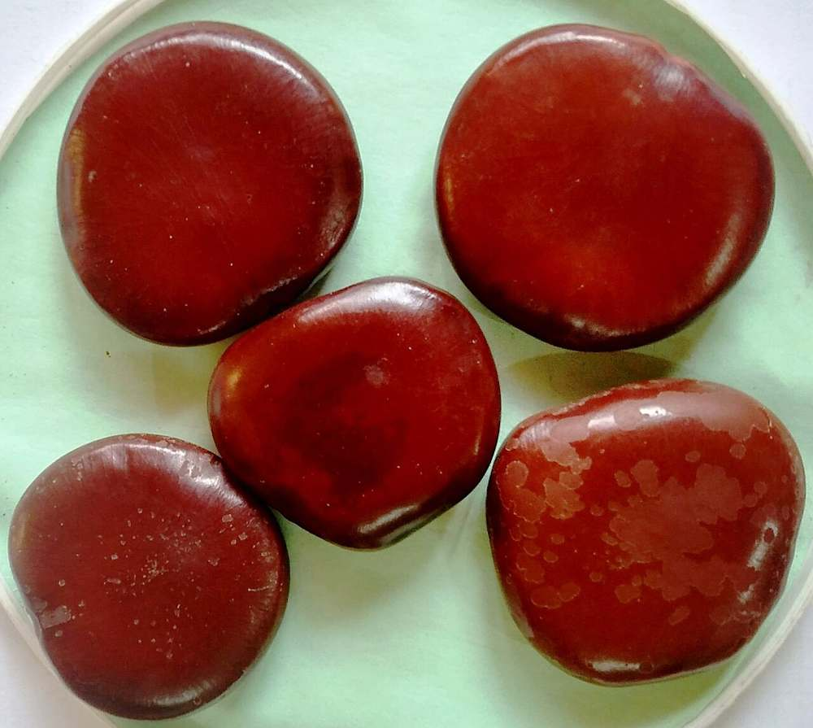

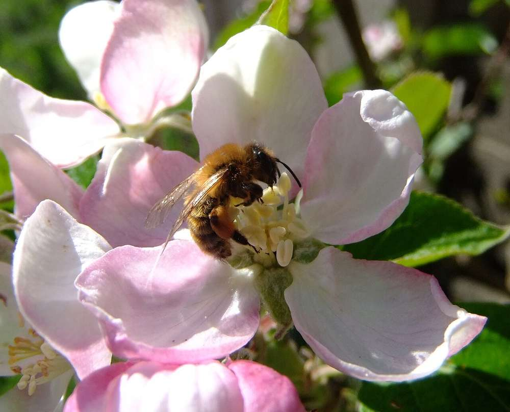
The film's big questionHow does a plant make more plants?
What your child learns
- Plants reproduce: they make new plants of the same kind.
- Many flowering plants need pollination. Pollen moves from flower to flower, often carried by bees, butterflies or hummingbirds, and then seeds can form.
- Seeds travel away from the parent plant by wind, water or animals, or by popping out of pods.
- Ferns and mosses don't make seeds. They reproduce with tiny spores.
Real specimens they studied
A dandelion seed head, apple blossoms becoming apples, maple seeds, sea hearts that ride the ocean to Florida beaches, Spanish needles, coconuts, and wax myrtle berries.
Words
- reproduce
- pollination
- pollen
- seed
- spore
- pollinator
Ask at dinner
"How does a dandelion seed travel? How about a coconut?" (Listen for: the wind carries dandelion seeds; coconuts float on water.)
Try at home
Go on a seed walk. Look for seeds with wings, fluff, hooks or hard shells, and guess how each one travels. Check your socks for hitchhikers when you get home!
Investigation: Seed vs. Spore Sorting
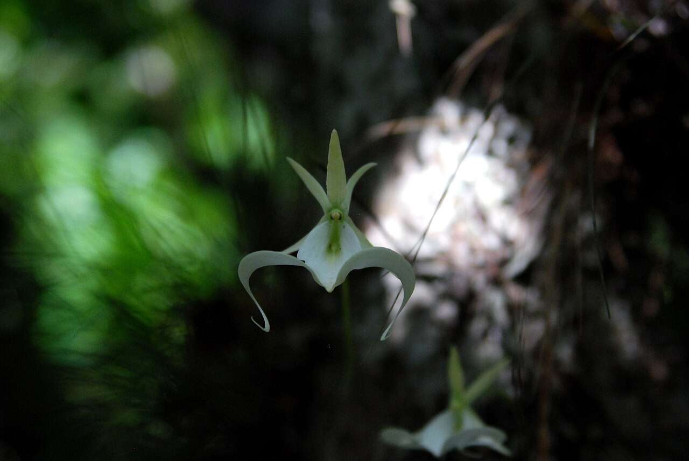
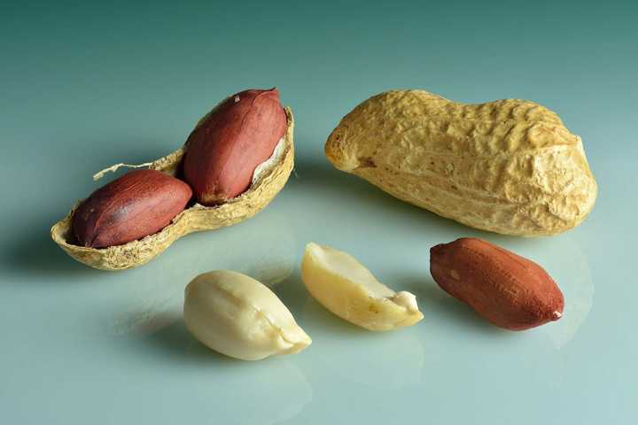
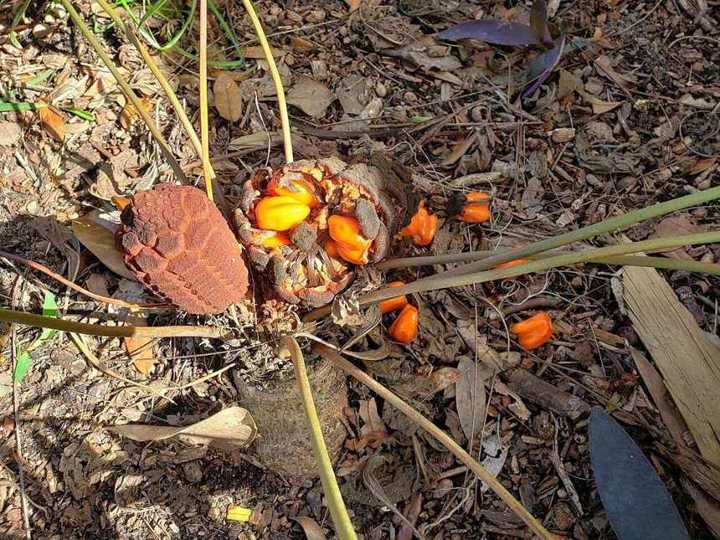
The film's big questionHow can you tell whether a tiny plant part is a seed or a spore?
What your child learns
- A seed is a package: a tiny baby plant and stored food inside a tough coat.
- A spore is just one tiny cell. A fern spore first grows into a tiny green heart-shaped plant, and a new fern grows from that.
- Size alone isn't enough evidence. Ghost orchid seeds are as tiny as dust, but each one still has a baby plant inside.
- Plant fossils show that scientists think spore plants grew on land long before seed plants.
Real specimens they studied
A split-open peanut, fern spores under a microscope, Florida's ghost orchid, Spanish moss (a flowering plant, not a moss), cinnamon fern, coontie, horsetail, and plant fossils from 125 to 430 million years old.
Words
- seed
- spore
- classify
- reproduce
- evidence
- pattern
Ask at dinner
"Is Spanish moss really a moss?" (Listen for: no; it has tiny flowers and makes seeds, so it's a seed plant.)
Try at home
Soak a dry lima bean in water overnight. Gently split it open and find the tiny baby plant at one end. Then look under a fern leaf for brown spore dots.
🌴 Plants close to home
Florida is a great place to see this unit's plants for real. Look for Spanish moss on live oaks, mangroves along the coast, and brown spore dots under fern leaves on a shady trail. You can visit Thomas Edison's giant banyan tree at the Edison and Ford Winter Estates in Fort Myers.
Ghost orchids grow wild in South Florida swamps like Fakahatchee Strand Preserve State Park. They are rare and protected, so enjoy them with your eyes and a camera only.
Photo credits
- A prickly pear cactus in Florida (18.01): Judy Gallagher, CC BY 2.0.
- Red mangrove prop roots (18.01): Hans Hillewaert, CC BY-SA 3.0.
- A saguaro in Saguaro National Park, Arizona (18.01): SaguaroNPS, Public domain.
- Christmas fern, Bear Creek Lake State Park, Virginia (18.02): vastateparksstaff, CC BY 2.0.
- A prairie after a planned burn, North Dakota (18.02): USFWS Mountain-Prairie, Public domain.
- Wiregrass, a grass of Florida's pine woods (18.02): unknown photographer, Public domain.
- An orange grove in Sebring, Florida (19.01): Mmacbeth, CC0.
- Tiny openings on a leaf, through a microscope (19.01): AioftheStorm, CC0.
- Seagrass in the Florida Keys (19.01): National Marine Sanctuaries, Public domain.
- Red romaine lettuce grown on the space station (19.02): NASA, Public domain.
- Barley sprouts grown in the dark (19.02): Kamal Ratna Tuladhar, CC BY-SA 3.0.
- Strawberry plants growing in long rows (19.02): Shixart1985, CC BY 2.0.
- Edison's banyan tree, Fort Myers, Florida (20.01): Fredlyfish4, CC BY-SA 4.0.
- Fallen stems that curved back up (20.01): Trio3D, CC BY-SA 4.0.
- Crocuses blooming through snow (20.01): Meneerke bloem, CC BY-SA 3.0.
- Charles Darwin, about 1880 (20.02): Elliott & Fry, Public domain.
- Tomato seedlings by a sunny window (20.02): User:Vmenkov, CC BY-SA 3.0.
- Trees along Wekiwa Run, Florida (20.02): The original uploader was Mwanner at English Wikipedia., CC BY-SA 3.0.
- Sea heart seeds, which can float to Florida beaches (21.01): Salil Kumar Mukherjee, CC BY-SA 4.0.
- A dandelion seed head (21.01): Avenue, CC BY-SA 4.0.
- A honey bee on an apple blossom (21.01): Orangeaurochs from Sandy, Bedfordshire, United Kingdom, CC BY 2.0.
- A ghost orchid in a Florida wildlife refuge (21.02): USFWS/Southeast, Public domain.
- Peanuts, cracked open and split (21.02): Ivar Leidus, CC BY-SA 4.0.
- Coontie seeds spilling from their cone (21.02): Donald Albury, CC BY-SA 4.0.
- Opti the owl: Optima Academy.